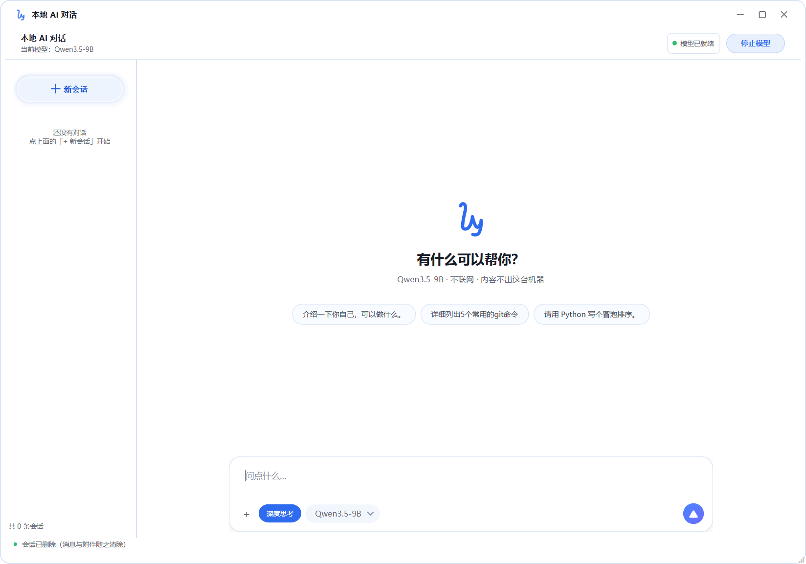

一个热键唤出
默认 Alt + Space，单实例运行；点空白处或切走就自动收起，再按一次回到上次的位置。
Global hotkey
一个热键，把桌面收进一个搜索框。
插件即可能，你的需求由你定义。 Build it. Plug it in.
Windows 10 / 11 · 64 位 · 纯本地，不联网
01Interface · 界面
Every feature. Every plugin.




02Features · 功能
全部能力跑在本机进程里，没有账号体系、没有云端同步，也没有后台偷偷上传。
默认 Alt + Space，单实例运行；点空白处或切走就自动收起，再按一次回到上次的位置。
扫开始菜单、桌面与应用路径，147 个应用 + 25 个系统工具；输入拼音首字母就能命中，搜索一次约 40~46 ms。
复制过的文字自动留在本机，按时间倒序；双击或回车直接写回剪贴板，支持搜索、单条删除与一键清空。
一个目录就是一个插件，plugin.json 声明名称、版本、权限与热键；启停即时生效，首页瓦片可拖动排序。
翻译、文档识别、本地 AI 共享一个 llama.cpp Router；模型按需下载、空闲释放，同一时间只跑一个下载任务。
配置、会话、模型、插件都在 %LocalAppData%\LyLaunch；开发者页可打开日志、导出诊断包、重置本机数据。
03Plugins · 插件
随安装包分发，不需要单独下载。内置插件可禁用，不可卸载。
离线翻译与本地大模型三档，支持反译与粘贴即译
框选截图，多显示器与 HiDPI，自动复制到剪贴板
PP-OCRv6 与本地 OCR 双引擎，表格转制表符
PDF / 图片 / Excel / Word 批量转 Markdown
处理器、主板、内存、显卡、存储，首次检测后本地缓存
收纳桌面文件、一键隐藏图标，热键 Alt + D
后台记录文字，上限 100 条，重启不丢
内置 llama.cpp，多会话、附件、深度思考
全屏游戏叠加 FPS / 1% Low / GPU，数据源 Intel PresentMon
04Release 1.2.0
1.2 没有堆新功能，主要把「设置」和「插件」这两块长期将就的地方整理干净。已安装的用户直接覆盖升级，个人数据与已下载模型都不动。
设置页两栏化：八个分区、左侧图标导航、切页淡入；每个分区独立滚动。
插件管理并入设置：取消独立窗口，换成一页列表 + 包库，安装、更新、卸载都在同一处。
插件快捷键搬家：集中到「快捷键」页，改键后即时重注册，不用重启程序。
新增开发者页：日志目录、导出诊断包、重置本机数据，从「关于 / 数据」里拆出来。
首页与排序：插件固定一行 8 个；「应用」「系统应用」也支持拖动排序，重启后保持。
关闭窗口可选：退出程序或最小化到托盘，默认退出，两种情况下托盘「退出」都能真退出。
05Download
装完按 Alt + Space 唤出。Windows 提示「已保护你的电脑」时点「更多信息 → 仍要运行」——程序没有购买代码签名证书，安装包本身没被改动。
C:\Program Files\LyLaunch。%LocalAppData%\LyLaunch，升级不动，模型不重下。